28 марта, среда

Долго валятся в мокром спальнике не хотелось. Перекусил, собрался и двинулся в путь. Ночевка моя оказалась буквально в 100 метрах от спуска в Большой кратер. Спуск не особо сложный, проезжается на велосипеде. Сам кратер сильного впечатления не произвел. Есть несколько интересных участков с разноцветными песками, но я ожидал большего. Примерно посредине кратера еще раз заклеил колесо в компании любопытных верблюдов.
Цветные пески
Перед выездом на 225 дорогу нашел бутылку питьевой воды, похоже, что выпавшую из джипа. Очень кстати, так как моя, набранная еще вчера в Мицпе Рамоне, подходила к концу.
По асфальту 225 дороги проехал туристическое место, где все останавливаются посмотреть на разноцветные пески Большого кратера. Толпы народа мне никогда не нравилась, и этот раз не стал исключением.
Поднялся из кратера по 225 до перекрестка с 206 дорогой и далее по ней мимо перекрестка с 227 в сторону Димоны. Кстати, 227 это именно та дорога, с которой мы свернули назад, когда нас накрыла песчаная бура на маале Агробим. До этого места от перекрестка буквально несколько километров. У меня была мысль, даже прокатится туда, чтобы замкнуть трек и тем самым полностью выполнить первоначальный план, но я решил, что эти несколько километров ничего не решают, а кататься туда-сюда довольно бессмысленно и продолжил путь в сторону Димоны.
Дорога не особо примечательная, разве что по правую руку огорожены огромные по израильским меркам площади - это ядерный центр в Димоне, кстати, именно над ним днем поднимают огромный дирижабль, который виден практически из любой точки юга Израиля.
206 дорога закончилась Т-образным перекрестком с 25 трассой, еще менее привлекательной, но у меня уже заканчивалось время, и мысли срезать по пустыне я отогнал в сторону.
Димона - крупный город, здесь есть вода, еда и тень. Всем этим вместе и сразу я не забыл немного понаслаждаться прежде, чем направился на автовокзал в поисках автобуса в Телль-Авив. Автобусное сообщение Димона-Тель-Авив весьма оживленное и долго ждать не пришлось. Автобусы большие и комфортабельные, с перевозкой велосипедов проблем нет. Билеты покупаются у водителя.
В Телль-Авиве доехал до центрального автовокзала, потом прокатился до набережной Средиземного моря, искупался в крупных волнах небольшого шторма, помылся в бесплатном душе прямо на пляже, немного поглазел на пеструю публику и выдвинулся в сторону аэропорта.
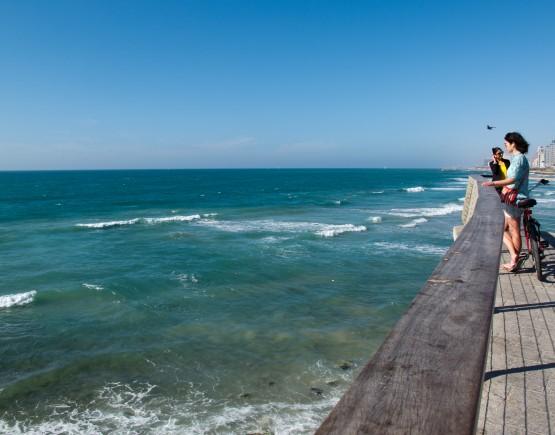
Средиземное море
Как и в прошлый раз решил проехать вдоль ручья Аялон. Надо признать, что за эти годы дорога стала значительно хуже. На многих участках ее просто смыло в ручей. Пожалуй, уже не стоит ездить этим путем. В прошлый раз мы пытались подъехать к аэропорту справа (если смотреть со стороны моря) и нам показалось, что пришлось далеко объезжать. В этот я раз решил попробовать объехать слева - получилось раза в 3 длиннее. Надо признать, что Бен Гурион очень не удобный аэропорт для заезда на велосипеде.
Наверное, нужно было заночевать на подъездах к аэропорту, в какой ни-будь апельсиновой роще, но я решил уже добраться до аэропорта и там покемарить.
По приезду в аэропорт сразу занялся упаковкой велосипеда и примерно в середине этого процесса решил сходить в туалет. Аккуратно собрал в кучу детали, накрыл все велочехлом и удалился. По возвращении застал около своих вещей человека с рацией, который явно использовал ее, чтобы объяснить начальству весь ужас обстановки. Хорошо еще, что не взорвали на фик мой велосипед. Еле уговорил его, что все нормально, что я просто пописать отошел. Да, в одиночных путешествиях есть и свои минусы. . .
Помня насколько длительный процесс проверки багажа я решил пойти на него сильно заранее, тем более, что места для спокойного сна я не нашел. Тому, что мой велик унесли в дальние дали и долго там мурыжили в этот раз я уже не удивлялся. Немного расстроило, что и остальные вещи разделили его участь.
В итоге все принесли обратно, но в виде одной большой кучи. Все что я аккуратно подвязывал к велосипеду, укладывал и приматывал скотчем в течении 3 часов теперь лежало передо мной в виде двух коробок и еще одной кучи. Вот тут я малость вышел из себя и на чистом русском языке рассказал им, что думаю о всей этой канители. Мне быстренько выдали скотч и ножницы и следующий час работники службы досмотра имели возможность наблюдать мастер-класс по профессиональной упаковке велосипеда и вещей в один чехол, включая все тонкости и хитрости.
Не подумайте, что я держу на них зло, я все понимаю - люди живут в постоянной готовности к терактам и стараются им качественно противодействовать и мне даже немного стыдно, что я не сдержался, но уж очень обидно было увидеть, как 3 часа твоей работы пошли насмарку. Вывод отсюда, наверное, такой - не нужно пытаться качественно все упаковать до досмотра, все равно придется перепаковывать после.
Дневной пробег 68, 5 км, набор высоты 671метров
Резюмируя написанное выше, могу сказать: ничего в Израиле не изменилось со времени нашего прошлого похода. Он прекрасен весной, как и осенью. Теплый прием друзей подстать теплому климату, а уж красот и достопримечательностей здесь хватит на несколько стран.
Общий пробег за поход 747 км, набор высоты 11568 метров
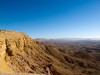 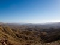 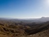 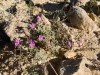 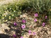 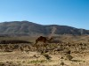 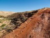 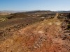 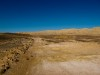 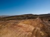 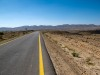  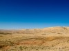 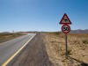 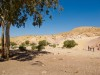 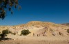 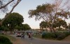 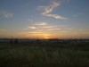
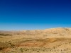 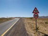 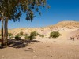 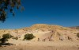 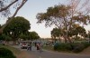 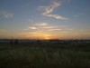
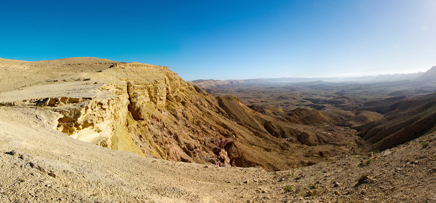
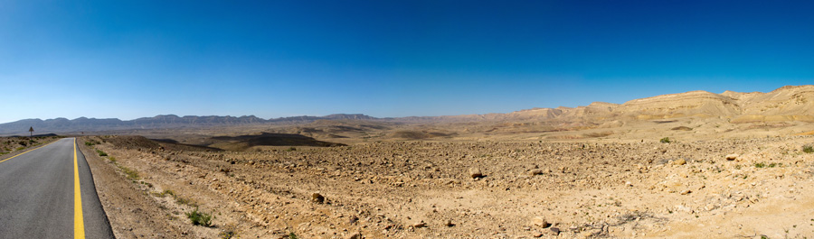
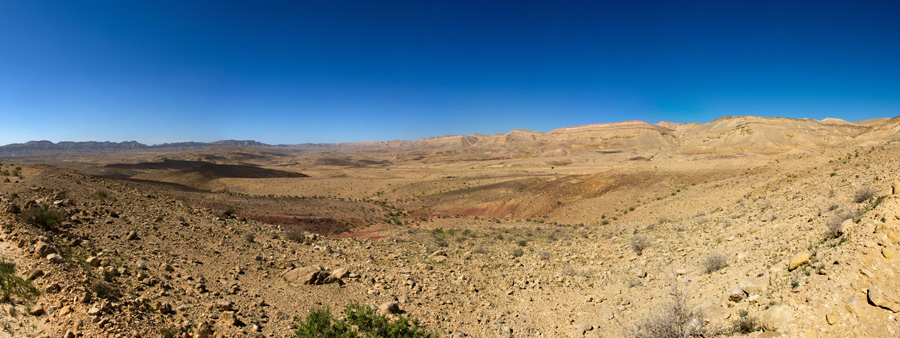
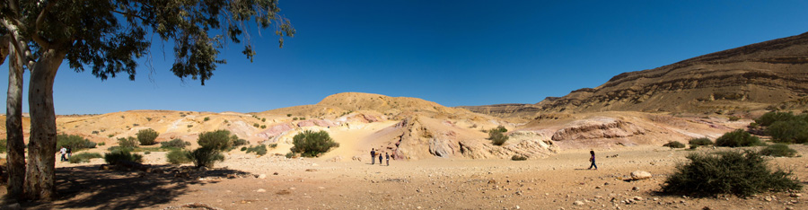